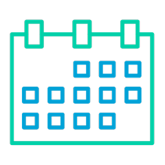
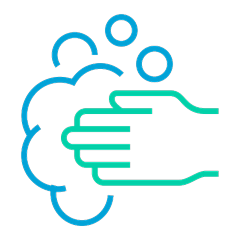
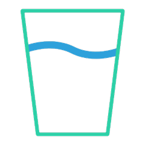
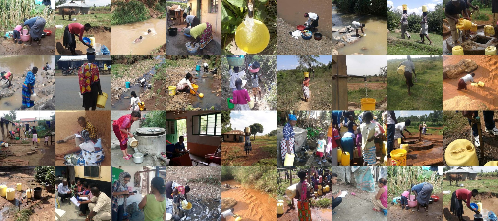
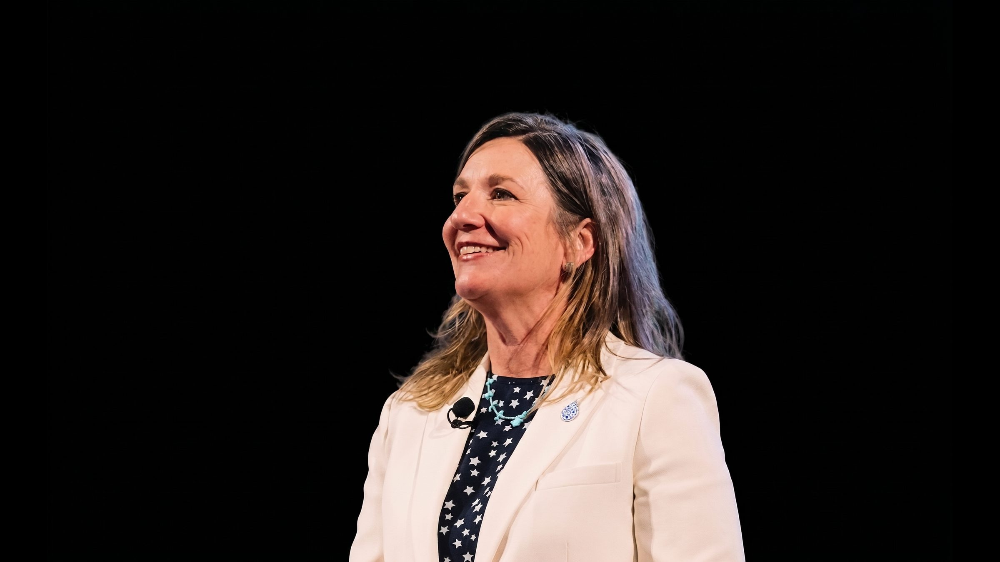

Water insecurity means
- worry.
- interrupted plans.
- not washing clothes.
- anger.
- not enough to drink.
- going to sleep thirsty.
The WISE Scales make it visible.
A validated scale that turns a hidden burden into a number.
The WISE Scales questions help us bring the lived experience of water into focus.
Worry
How often did you worry that you would not have enough water for all of your needs?

Plans
How often did you have to change schedules or plans because of problems with water?

Hands
How often were you not able to wash your hands after dirty activities because of problems with water?

Drink
How often did you not have as much water to drink as you would have liked?

Global Impact
Water insecurity data for the world
The WISE Scales bring a new way of thinking to the measurement of water-related issues. They help scientists, program developers, community leaders, investors, and policymakers assess the extent of water insecurity, track changes over time, inform policy and program development, and evaluate intervention effectiveness around the world.
100
countries and counting
100,000+
people surveyed
84
countries with national data
11
high-income countries with national data

“Water insecurity stops being invisible when we measure it. The WISE Scales give communities, governments, and researchers a shared language to see it, name it, and act on it.”
WISE Lead
Prof. Sera Young
Professor of Anthropology, Northwestern University
Lead, Water, Nutrition and Health Equity, United Nations University Institute for Water, Environment and Health
There’s a place for you in the WISE movement, whoever you are.
Decision makers
Bring evidence into the room. See what the data says about the communities you serve.
Researchers
Use a validated instrument, not a homemade one. Get the scale, the scoring guide, and the citation you need.

Implementers
Find the right WISE Scale for your setting, and see how organizations like yours have used the scales.